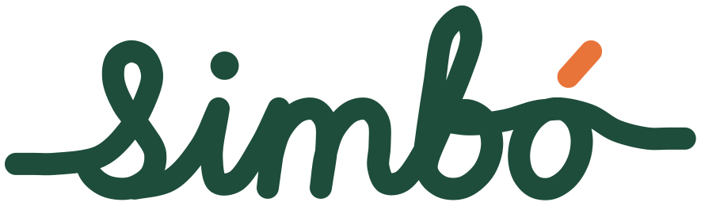
Guia da marca, versão 2
Proposta de evolução: as cores e a fonte continuam as mesmas. O que muda é o desenho. O traço ficou mais gordo e redondo, as curvas são contínuas e a linha entra por um lado e sai pelo outro, como um caminho só.
Antes e depois
Logotipo
Duas versões. A principal tem o fio entrando e saindo. A curta, sem fio, serve para espaços apertados e tamanhos pequenos. O "s" do logotipo é o mesmo do símbolo.
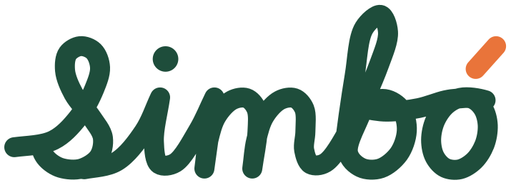
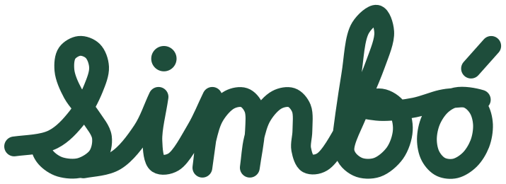
Símbolo
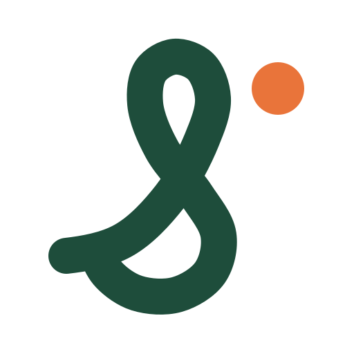
O fio
A linha do logotipo pode continuar até as bordas da peça. As ilustrações se apoiam nesse mesmo fio.
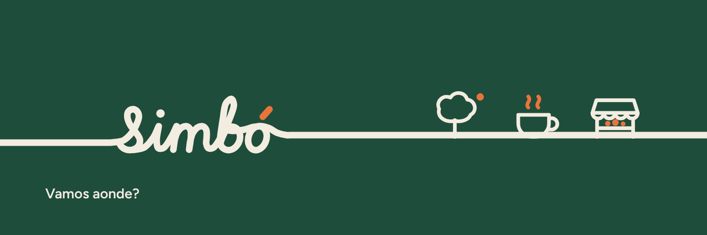
Cores
Tipografia
Vamos aonde?
Figtree SemiBold para títulos e Regular para texto. O logotipo é desenho, não é fonte: não escreva outras palavras imitando o traço.
Ícones
Grade de 24, traço de 2,25 com pontas redondas. O ponto laranja aparece só onde marca um lugar.
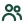
grupo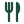
restauranteIlustrações
Uma por categoria do app, em traço único sobre o fio, com o detalhe em Barro. Cada uma tem versão para fundo claro e para fundo Mata.
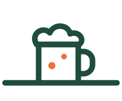
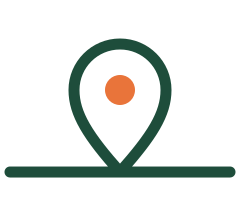
Redes sociais
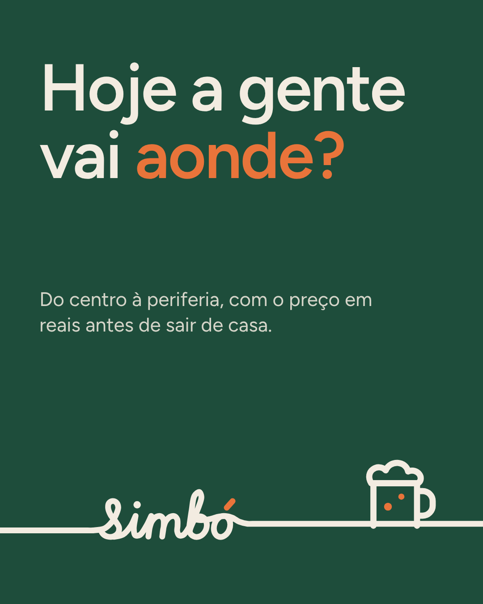
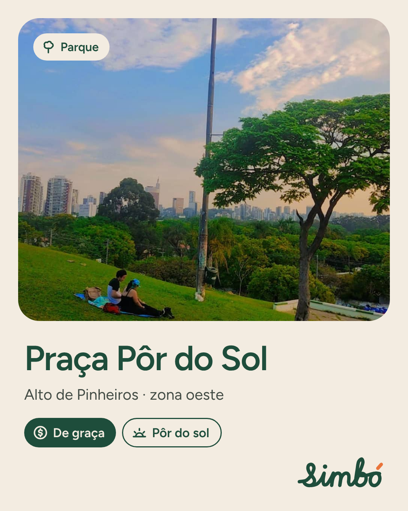
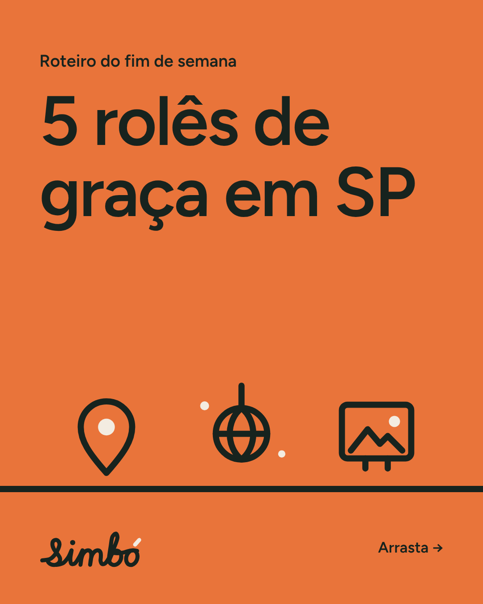
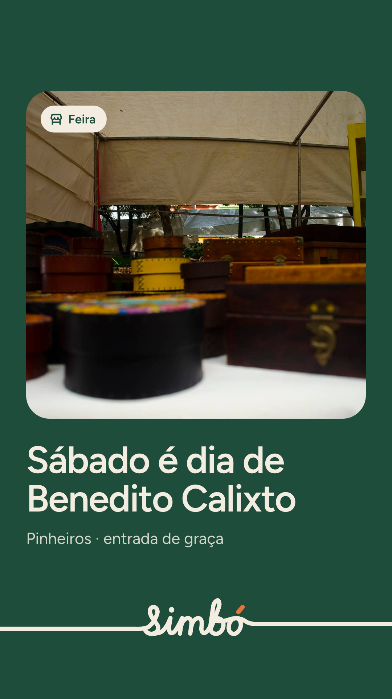
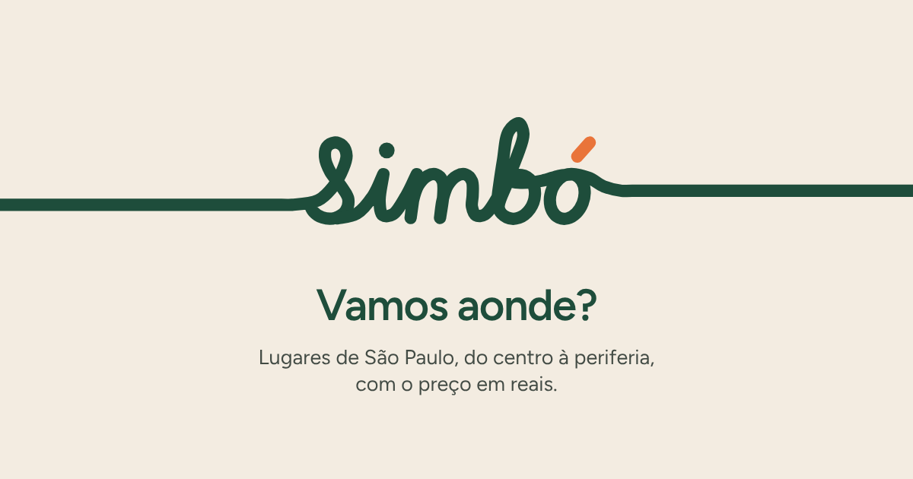
Avatar e capas de destaque:
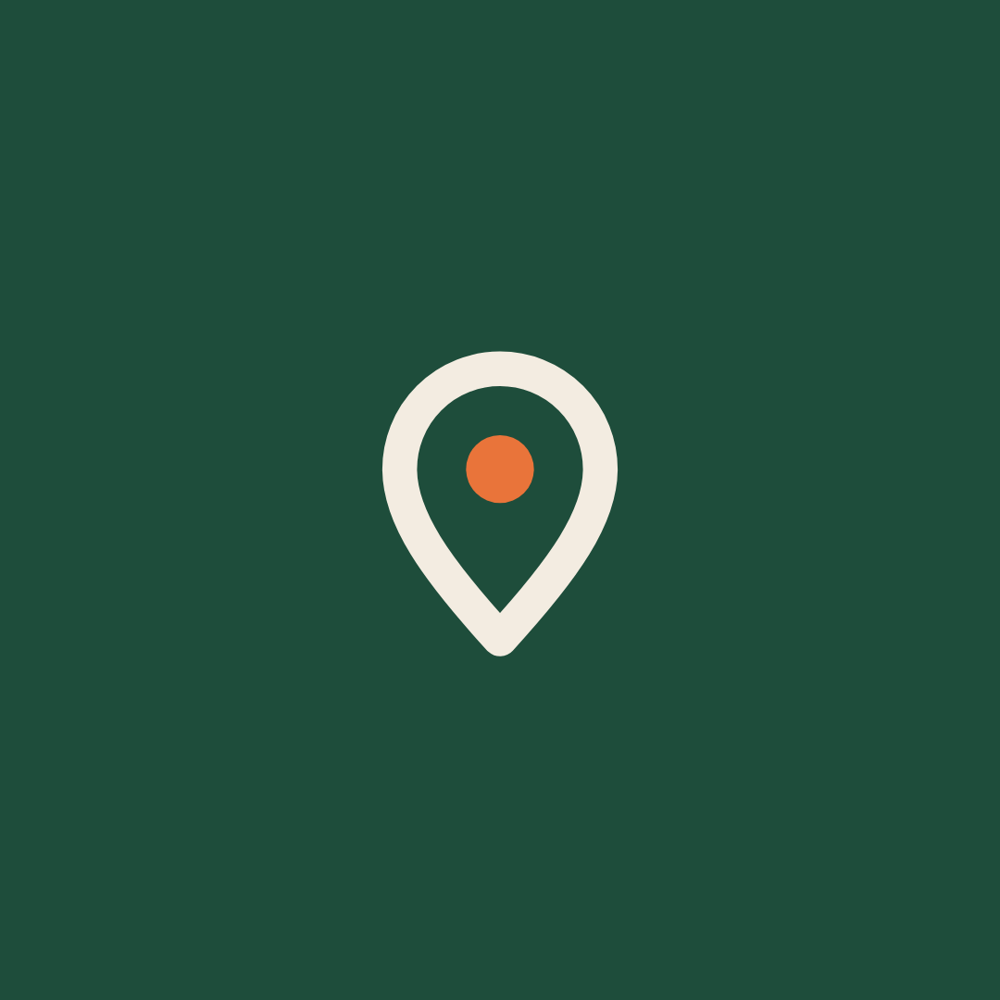
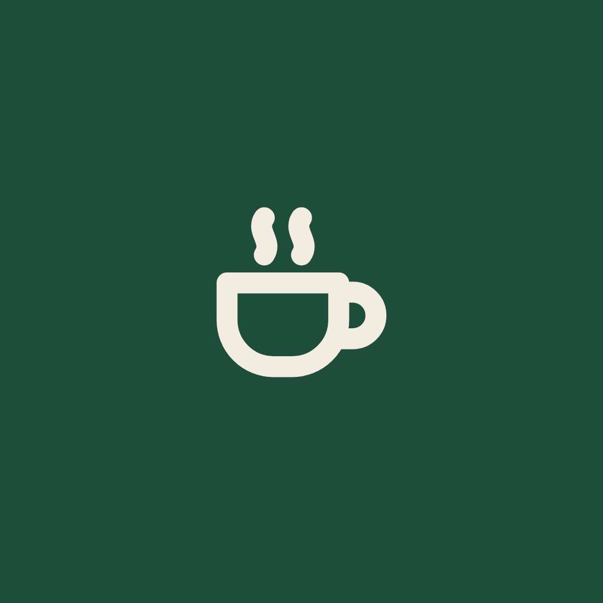
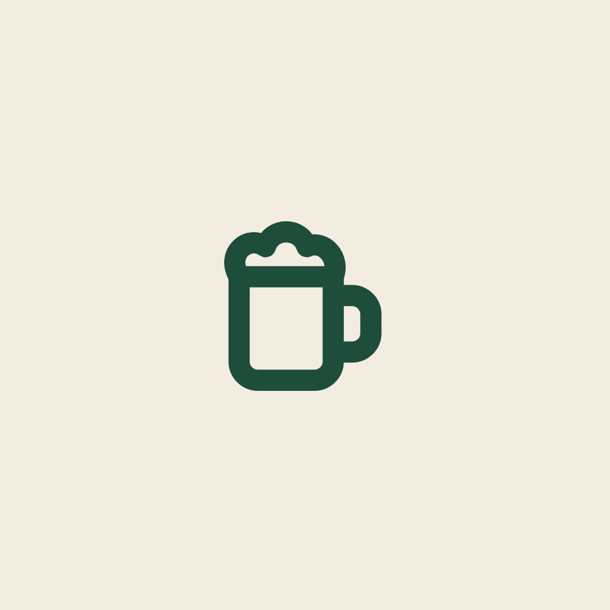
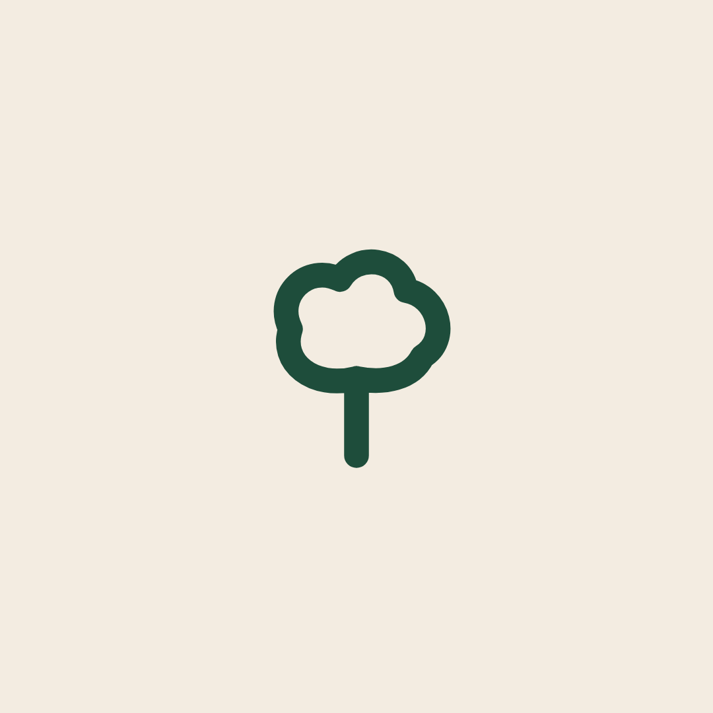
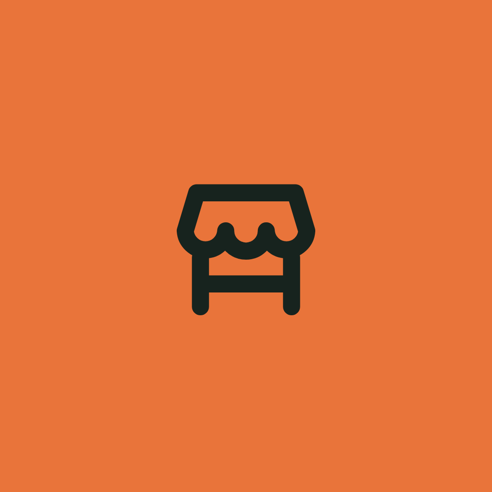
Cuidados
Deixe em volta do logotipo um respiro igual à altura do "s". Abaixo de 120 px de largura, use a versão curta; abaixo de 48 px, use o símbolo. Não mude as cores do traço fora das combinações desta página, não incline e não aplique sobre foto sem uma área lisa por trás.